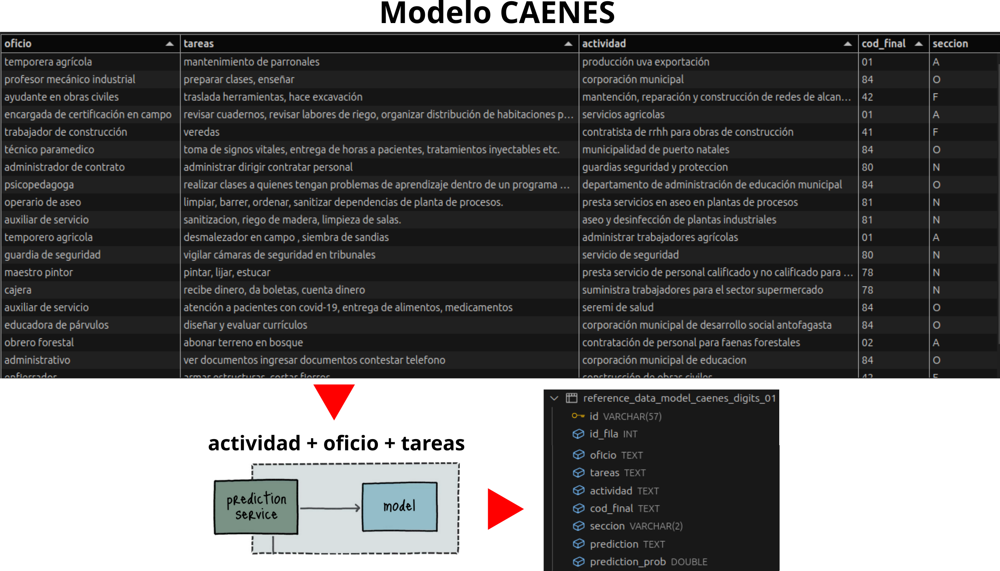

Monitoreo de Modelos de Clasificación de Texto
Unidad de Gobierno de Datos
Octubre 2025
Contenidos
Motivación hacia el Monitoreo
Model monitoring
Architecture
Metrics
Definition
Validation
Results
Motivación hacia el Monitoreo I
- La Encuesta Nacional de Empleo (ENE) genera mes a mes glosas abiertas que deben ser clasificadas y que dan cuenta de las ocupaciones y actividad económica del mercado laboral del país.
- En su flujo de procesamiento, analistas de la ENE utilizan codificación automática para clasificar la ocupación (CIUO) y la rama de actividad económica (CAENES) de las personas, al nivel de desagregación de 1 y 2 dígitos.
- Cuatro modelos de machine learning han sido disponibilizados desde Ciencia de Datos para colaborar en esta tarea:
- Modelo CIUO a 1 y 2 dígitos.
- Modelo CAENES a 1 y 2 dígitos.
- Además de la ENE, otras instituciones públicas también usan estos modelos (MDSF, ChileCompra, DT, FNE).
Motivación hacia el Monitoreo II
- Los modelos de machine learning se degradan con el tiempo, ya que deben lidiar con varios problemas: casos extremos, bucles de retroalimentación positiva y cambios en la distribución de los datos (data drift).
- Data drift puede ocurrir debido a errores de código en el procesamiento, variaciones en el esquema de datos de entrada, cambios en las distribuciones de características (features) o cambios en las condiciones del mundo real con el tiempo.
Motivación hacia el Monitoreo II
- Data drift: ¿cómo se presenta en el tiempo?
Motivación hacia el Monitoreo II
- Solución: monitoreo periódico y re-entrenamiento de los modelos.
- En el caso de la ENE, mes a mes analistas nos envían las glosas de ocupación y actividad económica correspondientes a los datos de la coyuntura mensual.
- Hacemos uso de estas glosas para implementar el monitoreo: comparando el nuevo dataset mensual (producción) versus el usado para entrenar los modelos (referencia), evaluando la existencia de data drift.
Model monitoring | Architecture
Model monitoring | Metrics | Definition
- Comparamos los dataset de producción (coyuntura) y de referencia (entrenamiento) aplicando múltiples métricas de drift:
- Algunas implementadas por la librería open-source Evidently.
- a nivel de cada clase (predicción / ground truth) y dataset.
- Otras implementadas a medida, como proxy para estimar la incerteza y novedad de los registros.
- a nivel de cada registro.
- Algunas implementadas por la librería open-source Evidently.
- Combinando las diferentes métricas obtenidas, calculamos una métrica única.
- nos permite seleccionar un subconjunto de registros para ser enviado a revisión.
- Las diferentes métricas calculadas se almacenan en MinIO como archivos html, json, parquet.
Model monitoring | Metrics | Definition
| Report | Evaluación | Nivel |
|---|---|---|
| Text Drift | drift sobre los descriptores Text Length y Word Count aplicados a las columnas oficio, tareas y actividad (sólo CAENES). - Text Length: largo del texto en caracteres. - Word Count: número de palabras en el texto. |
clase, dataset |
| Embedding Drift | drift en los embeddings obtenidos para el dataset de producción y referencia, a partir de los mismos word embeddings pre-entrenados usados en el entrenamiento del modelo. | clase, dataset |
| Prediction Drift | drift en las clases predichas por el modelo. | dataset |
| Prediction Drift vs Truth | drift en las clases predichas por el modelo en el dataset de producción vs classes verdaderas en el dataset de referencia. | dataset |
| Prediction Class Prob Drift | drift en las probabilidades de las clases predichas por el modelo. | clase, dataset |
| Record Drift | drift basado en incerteza y novedad de las glosas. | registro |
Model monitoring | Metrics | Definition
| Report | Métrica para evaluar drift | Rango | Threshold |
|---|---|---|---|
| Text Drift | - Wasserstein distance: modelos a 1 dígito. - Kolmogorov–Smirnov (K-S) test: modelos a 2 dígitos. |
[0, +inf] [0, 1] |
drift ≥ 0.1 drift < 0.05 |
| Embedding Drift | - Binary classifier para distinguir entre los embeddings calculados desde ambos datasets. - Retorna valores de ROC AUC como drift_score. |
[0, 1] | drift > 0.55 |
| Prediction Drift | - Jensen-Shannon distance. | [0, 1] | drift ≥ 0.1 |
| Prediction Drift vs Truth | - Jensen-Shannon distance. | [0, 1] | drift ≥ 0.1 |
| Prediction Class Prob Drift | - Wasserstein distance: modelos a 1 dígito. - Kolmogorov–Smirnov (K-S) test: modelos a 2 dígitos. |
[0, +inf] [0, 1] |
drift ≥ 0.1 drift < 0.05 |
| Record Drift | - uncertainty_score_norm - novelty_score_norm |
[0, 1] [0, 1] |
Model monitoring | Metrics | Definition
- Cómo calculamos una única métrica a partir de las múltiples métricas aplicadas?
- Usamos sumas ponderadas para combinar las métricas obtenidas a distintos niveles (registro, clase, dataset) y luego para obtener una métrica final de revisión.
- Record drift score:
- Suma ponderada de métricas a nivel de registro:
uncertainty_score_norm, novelty_score_norm.
- Suma ponderada de métricas a nivel de registro:
- Class drift score:
- Suma ponderada de métricas a nivel de clase y dataset normalizadas (entre 0 y 1):
drift en descriptores de texto, embeddings, clases predichas, clases predichas vs verdaderas, probabilidades de las clases predichas.
- Suma ponderada de métricas a nivel de clase y dataset normalizadas (entre 0 y 1):
- Revision score:
- Suma ponderada de record_drift_score y class_drift_score.
- Nos permite seleccionar qué registros del periodo analizado (coyuntura) es importante revisar.
Model monitoring | Metrics | Definition
| Metric | W | Metric | W | Metric |
|---|---|---|---|---|
| uncertainty_score_norm novelty_score_norm |
0.5 0.5 |
record_drift_score |
0.5 |
|
| delta_drift_score_length_oficio_class_norm delta_drift_score_length_tareas_class_norm delta_drift_score_wordcount_oficio_class_norm delta_drift_score_wordcount_tareas_class_norm delta_drift_score_small_embeddings_class_norm delta_drift_score_big_embeddings_class_norm delta_drift_score_prediction_class_probs_class_norm delta_drift_score_length_oficio_global_norm delta_drift_score_length_tareas_global_norm delta_drift_score_wordcount_oficio_global_norm delta_drift_score_wordcount_tareas_global_norm delta_drift_score_small_embeddings_global_norm delta_drift_score_big_embeddings_global_norm delta_drift_score_prediction_global_norm delta_drift_score_prediction_vs_truth_global_norm delta_drift_score_prediction_class_probs_global_norm |
0.08 0.08 0.08 0.08 0.08 0.08 0.08 0.04 0.04 0.04 0.04 0.04 0.04 0.04 0.04 0.04 |
class_drift_score |
0.5 |
revision_score |
Model monitoring | Metrics | Validation
- ¿Cómo validamos las métricas calculadas?
- Seleccionamos un subconjunto de registros para cada periodo de interés (ej: coyunturas) para ser codificado por analistas expertos a uno y dos dígitos.
- 100 registros para cada tipo de modelo: CIUO y CAENES.
- Cada selección contiene registros observados en los valores más bajos (smaller) y altos (larger) del revision_score en el periodo, ordenados aleatoriamente.
- Distribución de clases (predichas) es la misma que en el dataset de producción del periodo.
- Dos analistas clasificarán el mismo subconjunto de registros seleccionados.
- Permite contar con dos clasificaciones independientes y contrastarlas.
- Los analistas además responderían un par de preguntas que nos permitirán evaluar la complejidad y novedad de los registros, a partir de su conocimiento experto.
- Q1. En relación a lo complejo que usualmente le es codificar un registro, ¿qué tan difícil fue clasificar este registro a dos dígitos?:
- 1: Fue fácil.
- 2: Fue medianamente difícil.
- 3: Fue difícil.
- Q2. ¿Considerando su experiencia codificando, qué tan parecido considera este registro a alguno que haya visto en el pasado?
- 1: Es parecido. He visto bastantes glosas similares en el pasado.
- 2: Algo parecido. He visto algunas glosas similares en el pasado.
- 3: Es distinto. He visto muy pocas o ninguna glosa similar en el pasado.
- Q1. En relación a lo complejo que usualmente le es codificar un registro, ¿qué tan difícil fue clasificar este registro a dos dígitos?:
- Seleccionamos un subconjunto de registros para cada periodo de interés (ej: coyunturas) para ser codificado por analistas expertos a uno y dos dígitos.
Model monitoring | Metrics | Validation
- Cómo validamos las métricas calculadas?
- Validación de métricas:
- Analizaremos cómo se correlacionan nuestras métricas con:
- La estimación de complejidad y novedad de los analistas.
- La clasificación realizada por los analistas.
- Análisis para una coyuntura hasta ahora: 2024-01.
- Evaluaremos cómo evoluciona en el tiempo la performance de los modelos en base a la clasificación realizada por analistas.
- A partir de dicha evaluación, podremos estimar la frecuencia con que sería conveniente re-entrenar los modelos.
- Analizaremos cómo se correlacionan nuestras métricas con:
- Validación de métricas:
Model monitoring | Metrics | Results: Questions to analysts
Q1: … ¿qué tan difícil fue clasificar este registro a dos dígitos?
Q2: … ¿qué tan parecido considera este registro a alguno que haya visto en el pasado?
Model monitoring | Metrics | Results: Questions to analysts
question = Q1, model = ciuo
Model monitoring | Metrics | Results: Questions to analysts
question = Q1, model = caenes
Model monitoring | Metrics | Results: Questions to analysts
question = Q2, model = ciuo
Model monitoring | Metrics | Results: Questions to analysts
question = Q2, model = caenes

Model monitoring | Metrics | Results: Questions to analysts
- Correlación entre nuestras métricas y estimación de complejidad (Q1) y novedad de los analistas (Q2).
- Q1: Tanto para modelo CIUO como CAENES, vemos en la región de revision_score:
- menor, registros en su gran mayoría fáciles de clasificar (86-98%) y muy pocos díficiles de clasificar (0-8%) para analistas.
- mayor, aumento en la proporción de registros díficiles de clasificar (12-34%) y disminución en registros fáciles de clasificar (40-76%) para analistas.
- Q2: Tanto para el modelo CIUO como CAENES, vemos en la región de revision_score:
- menor, registros que tienden a ser más parecidos (70-98%) comparado con los algo parecidos (2-30%) o distintos (0-8%) para analistas.
- mayor, aumento tanto de registros distintos (10-34%) como algo parecidos (16-62%) y disminución de registros parecidos (14-74%) para analistas.
- Menor evidencia de drift en registros se correlaciona con menor complejidad y novedad para analistas. ✅
- Mayor evidencia de drift en registros se correlaciona parcialmente con mayor complejidad y novedad para analistas. ✅
- Q1: Tanto para modelo CIUO como CAENES, vemos en la región de revision_score:
| Q | model | revision_score | codificador_1 (R1, R2, R3) | codificador_2 (R1, R2, R3) |
|---|---|---|---|---|
| Q1 | ciuo | smaller | (46, 4, 0) = (92, 8, 0) % | (49, 1, 0) = (98, 2, 0) % |
| Q1 | ciuo | larger | (26, 18, 6) = (52, 36, 12) % | (27, 14, 9) = (54, 28, 18) % |
| Q1 | caenes | smaller | (49, 1, 0) = (98, 2, 0) % | (43, 3, 4) = (86, 6, 8) % |
| Q1 | caenes | larger | (38, 5, 7) = (76, 10, 14) % | (20, 8, 17) = (40, 16, 34) % |
| Q2 | ciuo | smaller | (35, 15, 0) = (70, 30, 0) % | (49, 1, 0) = (98, 2, 0) % |
| Q2 | ciuo | larger | (7, 31, 12) = (14, 62, 24) % | (22, 20, 8) = (44, 40, 16) % |
| Q2 | caenes | smaller | (49, 1, 0) = (98, 2, 0) % | (44, 2, 4) = (88, 4, 8) % |
| Q2 | caenes | larger | (37, 8, 5) = (74, 16, 10) % | (20, 8, 17) = (40, 16, 34) % |
Model monitoring | Metrics | Results: Analysts vs Model
model = ciuo, revision_score = smaller, codificador 1. Acc = 0.98
Model monitoring | Metrics | Results: Analysts vs Model
model = ciuo, revision_score = smaller, codificador 2. Acc = 1.0
Model monitoring | Metrics | Results: Analysts vs Model
model = ciuo, revision_score = smaller, codificador 1 vs 2. Acc = 0.98
Model monitoring | Metrics | Results: Analysts vs Model
model = ciuo, revision_score = larger, codificador 1. Acc = 0.30
Model monitoring | Metrics | Results: Analysts vs Model
model = ciuo, revision_score = larger, codificador 2. Acc = 0.28
Model monitoring | Metrics | Results: Analysts vs Model
model = ciuo, revision_score = larger, codificador 1 vs 2. Acc = 0.74
Model monitoring | Metrics | Results: Analysts vs Model
model = caenes, revision_score = smaller, codificador 1. Acc = 0.92
Model monitoring | Metrics | Results: Analysts vs Model
model = caenes, revision_score = smaller, codificador 2. Acc = 0.94
Model monitoring | Metrics | Results: Analysts vs Model
model = caenes, revision_score = smaller, codificador 1 vs 2. Acc = 0.94
Model monitoring | Metrics | Results: Analysts vs Model
model = caenes, revision_score = larger, codificador 1. Acc = 0.12
Model monitoring | Metrics | Results: Analysts vs Model
model = caenes, revision_score = larger, codificador 2. Acc = 0.12
Model monitoring | Metrics | Results: Analysts vs Model
model = caenes, revision_score = larger, codificador 1 vs 2. Acc = 0.70
Model monitoring | Metrics | Results: Analysts vs Model
- Correlación entre nuestras métricas y clasificación realizada por los analistas.
- Se observa un accuracy alto en la región de menor revision_score tanto para el modelo CIUO (0.98 - 1.0) como CAENES (0.92 - 0.94), con una alta concordancia entre clasificadores en ambos casos (0.98 y 0.94, respectivamente).
- El accuracy decae drásticamente en la región de mayor revision_score tanto para el modelo CIUO (0.28 - 0.30) como CAENES (0.12), con una concordancia entre clasificadores que decae en menor medida (0.74 y 0.70, respectivamente).
- Evidencia de drift se relaciona inversamente con la performance de los modelos e incluso con la concordancia entre analistas. ✅
| model | revision_score | test | accuracy |
|---|---|---|---|
| ciuo | smaller | codificador 1 vs model | 0.98 |
| ciuo | smaller | codificador 2 vs model | 1.0 |
| ciuo | smaller | codificador 1 vs 2 | 0.98 |
| ciuo | larger | codificador 1 vs model | 0.30 |
| ciuo | larger | codificador 2 vs model | 0.28 |
| ciuo | larger | codificador 1 vs 2 | 0.74 |
| caenes | smaller | codificador 1 vs model | 0.92 |
| caenes | smaller | codificador 2 vs model | 0.94 |
| caenes | smaller | codificador 1 vs 2 | 0.94 |
| caenes | larger | codificador 1 vs model | 0.12 |
| caenes | larger | codificador 2 vs model | 0.12 |
| caenes | larger | codificador 1 vs 2 | 0.70 |

Monitoreo de Modelos de Clasificación de Texto
Unidad de Gobierno de Datos
Octubre 2025
Apéndice | Motivación hacia el Monitoreo II
- Los modelos de machine learning se degradan con el tiempo, ya que deben lidiar con varios problemas: casos extremos, bucles de retroalimentación positiva y cambios en la distribución de los datos (data drift).
- Casos extremos (edge cases): Son muestras válidas pero atípicas que exponen las debilidades de un modelo en producción, llevándolo a hacer predicciones absurdas o catastróficas.
- Bucles de retroalimentación positiva (positive feedback loops): Ocurren cuando las predicciones del modelo influyen en los datos futuros de manera que refuerzan su comportamiento, lo que puede generar resultados sesgados.
- Cambios en la distribución (data drift) ocurren cuando los datos en producción difieren de los datos de entrenamiento utilizados para construir el modelo.
- Solución: monitoreo periódico y re-entrenamiento de los modelos.
- En el caso de la ENE, mes a mes analistas nos envían las glosas de ocupación y actividad económica correspondientes a los datos de la coyuntura mensual.
- Hacemos uso de estas glosas para implementar el monitoreo: comparando el nuevo dataset mensual (producción) versus el usado para entrenar los modelos (referencia), evaluando la existencia de data drift.
Apéndice | Data drift | Principales tipos
- Deriva de covariables (Covariate drift): Ocurre cuando la distribución de las variables de entrada cambia, pero la relación entre estas características y la variable objetivo se mantiene igual.
- Cambia la forma en que se describen ocupaciones/actividades (lenguaje en las glosas), pero el significado final (etiqueta) se mantiene.
- Ej: aparecen nuevas palabras como programar, diseñar, gestionar en línea, pero esas descripciones siguen correspondiendo a la misma categoría de ocupación (ej: “Ingeniero de software”).
Apéndice | Data drift | Principales tipos
- Deriva de etiquetas (Label drift): Sucede cuando la distribución de la variable objetivo cambia, mientras que la relación entre las características de entrada y la variable objetivo permanece constante.
- Cambian las frecuencias relativas de clases (qué ocupaciones/actividades son más comunes), aunque la correspondencia entrada → salida se mantiene.
- Ej: aunque las descripciones de los registros se mantengan estables, cada vez aparecen más casos etiquetados como ocupaciones de “Tecnología” y menos de “Administración”.
Apéndice | Data drift | Principales tipos
- Deriva de concepto (Concept drift): Se produce cuando la relación entre las características de entrada y la variable objetivo varía debido a que los supuestos del modelo ya no son válidos.
- cambia la relación entrada → salida, porque los términos empiezan a usarse para otros conceptos.
- Ej: si se decide que una palabra que estaba asociada a la clase X comienza a asociarse a la clase Y.
Apéndice | Esquema General
Apéndice | Model training
- Los modelos disponibilizados fueron entrenados en Pytorch utilizando una arquitectura RNN: multi-layer gated recurrent unit (GRU).
- Para mejorar el aprendizaje del modelo, se agregó una capa preliminar que incluye word embeddings pre-entrenados.
- Los embeddings son representaciones de palabras como vectores numéricos, que permiten modelar la relación semántica entre palabras.
- Los embeddings capturan la relación entre palabras en las glosas de entrenamiento, lo que aumenta la capacidad de aprendizaje del modelo.
- Métricas obtenidas:
Apéndice | Model prediction
Apéndice | Model prediction
Apéndice | Model monitoring | Data capture

Apéndice | Model monitoring | Data capture
Apéndice | Model monitoring | Dashboard
Apéndice | Model monitoring | Metrics
- 1) Wasserstein distance:
- La usamos en Text Drift y Prediction Class Prob Drift, para modelos a 1 dígitos.
- Mide la distancia entre dos distribuciones de probabilidad, calculando la cantidad mínima de trabajo requerido para transformar una distribución en otra.
- Trabajo se refiere al costo de mover una unidad de masa de probabilidad.
- drift_score en rango [0, +inf]:
- 0 indica que las dos distribuciones son idénticas.
- > threshold es indicativo de drift. Por defecto threshold = 0.1
Apéndice | Model monitoring | Metrics
- 1) Wasserstein distance: estimación.
Apéndice | Model monitoring | Metrics
- 2) Kolmogorov–Smirnov (K-S) test:
- La usamos en Text Drift y Prediction Class Prob Drift, para modelos a 2 dígitos.
- Es una prueba estadística no paramétrica: no asume una distribución específica de los datos (ejemplo: normal u otra).
- Construye distribuciones de probabilidad acumulada (CDFs).
- Evalúa la máxima diferencia absoluta entre ambas CDFs y ese valor se usa como estadístico de prueba.
- La hipótesis nula es que las dos muestras vienen de la misma distribución y la prueba se aplica para rechazar o aceptar esta hipótesis.
- Retorna p_value en rango [0, 1].
- Si p_value < 0.05, usualmente podemos declarar que hay evidencia para rechazar la hipótesis nula y considerar que las dos muestras son diferentes, es decir, que existe drift.
Apéndice | Model monitoring | Metrics
- 2) Kolmogorov–Smirnov (K-S) test: estimación.

Apéndice | Model monitoring | Metrics
- 3) Jensen-Shannon distance:
- La usamos en Prediction Drift y Prediction Drift vs Truth, para modelos a 1 y 2 dígitos.
- Basada en el método Kullback-Leibler Divergence, mide la distancia entre dos distribuciones de probabilidad calculando la raíz cuadrada de la Jensen-Shannon divergence.
- drift_score en rango [0, 1]:
- 0 indica que las dos distribuciones son idénticas.
- > threshold es indicativo de data drift. Por defecto threshold = 0.1
- drift_score en rango [0, 1]:
Apéndice | Model monitoring | Metrics
- 3) Jensen-Shannon distance: estimación.

Apéndice | Model monitoring | Metrics
- 4) Binary Classifier
- Lo usamos en Embedding Drift (modelos a 1 y 2 dígitos).
- Este clasificador retorna valores de ROC AUC como drift_score.
- drift_score en rango [0, 1].
- > threshold es indicativo de data drift. Por defecto threshold = 0.55
Apéndice | Model monitoring | Metrics
- 4) Binary Classifier: estimación.
Apéndice | Model monitoring | Metrics
- 5) Record Drift:
- Uncertainty score: Es una medida de la baja confianza de los registros del dataset de producción, estimada en base a las probabilidades de predicción del modelo. \[ \small uncertainty\_score = 1 - prediction\_probability \]
Apéndice | Model monitoring | Metrics
- Novelty score: Es una medida de la diferencia semántica entre registros del dataset de producción y referencia.
Combina similitud coseno y la mínima distancia euclidiana normalizada calculadas para cada embedding del dataset de producción respecto a todos los embeddings del dataset de referencia. - Primer paso: calcular la similitud coseno: \[
cos\_sim(A, B) = (A · B) / (||A|| × ||B||)
\] En nuestro caso:
- current_vectors = matriz de M × D (M ejemplos actuales, D dimensiones)
- reference_vectors = matriz de N × D (N ejemplos de referencia, D dimensiones)
- cosine_similarity = matriz de M × N donde cada elemento (i,j) es: \[ similarities[i,j] = cos\_sim(current\_vector[i], reference\_vector[j]) \]
- Luego, para cada ejemplo actual i, encuentra la similitud más alta con cualquier ejemplo de referencia. \[ max\_sim[i] = max(similarities[i,j]) for j ∈ [1, N] \]
- Segundo paso: calcular la distancia euclidiana entre los datos actuales y los de referencia: \[ euclidean\_dist(A, B) = √[(a₁-b₁)² + (a₂-b₂)² + ... + (aₙ-bₙ)²] \]
- Luego, calcular la distancia mínima del ejemplo actual i a cualquier ejemplo de referencia \[ min\_dist[i] = min(euclidean\_dist(current[i], reference[j])) for j ∈ [1, N] \]
- Se normalizan las distancias: \[ distance\_score[i] = min\_distances[i] / max(min\_distances) \]
- Finalmente definimos el novelty score como el promedio de ambas señales: \[
novelty\_score[i] = ((1 - max\_sim[i]) + distance\_score[i]) / 2
\]
- (1 - max_sim[i]): Qué tan DISimilar es (0 = muy similar, 1 = muy diferente)
- distance_score[i]: Qué tan lejos está (0 = muy cerca, 1 = muy lejos)
- En resumen, la similitud coseno detecta cambios semánticos y la distancia euclidiana cambios de intensidad.
- Los ejemplos con scores altos son candidatos para revisión manual por ser potencialmente nuevos.
Apéndice | Model monitoring | Metrics
- Record drift score:
- Se normalizan el novelty score usando la fórmula:
\[ \small novelty\_score\_norm[i] = \frac{novelty\_score[i] - min(novelty\_score)}{max(novelty\_score) - min(novelty\_score)} \] - Luego usamos las métricas normalizadas para calcular: \[ \small record\_drift_\_score = w_1 \times uncertainty\_score\_norm \\ \small \hspace{4.cm} + w_2 \times novelty\_score\_norm \]
- donde usamos por defecto los pesos: \[ \small w_1=0.5, w_2=0.5 \]
- Se normalizan el novelty score usando la fórmula: